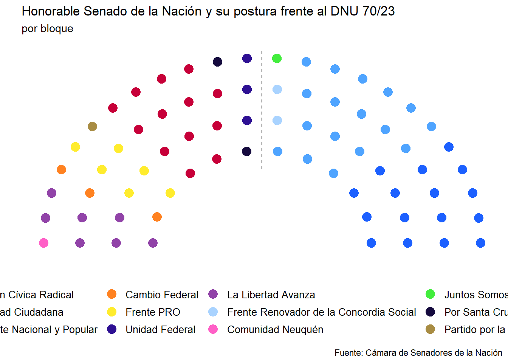

Senado
Cámara de Senadores dividida POR BLOQUE

Cámara de Senadores dividida POR VOTO

Cantidad de votos por tipo de voto
Tabla con información pública de los senadores que están a favor o indecisos del DNU 70/23
| Distrito | Nombre | Apellido | party_long | voto_al_dnu | Email institucional | ||
|---|---|---|---|---|---|---|---|
| Buenos Aires | Maximiliano | Abad | Unión Cívica Radical | Posible en contra | maximiliano.abad@senado.gob.ar | MaxiAbad | maxi.abad |
| Buenos Aires | Eduardo Enrique | de Pedro | Unidad Ciudadana | En contra | eduardo.depedro@senado.gob.ar | wadodecorrido | wadodecorrido |
| Buenos Aires | Juliana | Di Tullio | Unidad Ciudadana | En contra | juliana.ditullio@senado.gob.ar | ditulliojuli | julianaditullio |
| Catamarca | Lucía Benigna | Corpacci | Frente Nacional y Popular | En contra | lucia.corpacci@senado.gob.ar | LuciaCorpacci | corpaccilucia |
| Catamarca | Flavio Sergio | Fama | Unión Cívica Radical | A favor | flavio.fama@senado.gob.ar | famaflavio | flaviofamaoficial |
| Catamarca | Guillermo Eduardo | Andrada | Frente Nacional y Popular | Posible en contra | guillermo.andrada@senado.gob.ar | negrojoao | guillermoandrada |
| Chaco | María Inés | Pilatti Vergara | Frente Nacional y Popular | En contra | pilatti@senado.gob.ar | pilattivergara | NA |
| Chaco | Antonio José | Rodas | Frente Nacional y Popular | En contra | antonio.rodas@senado.gob.ar | antoniorodasok | antoniojose.rodas |
| Chubut | Andrea Marcela | Cristina | Cambio Federal | A favor | andrea.cristina@senado.gob.ar | AndyCristina07 | andreacristina.chubut |
| Chubut | Carlos Alberto | Linares | Unidad Ciudadana | En contra | carlos.linares@senado.gob.ar | LinaresCarlosCR | carloslinarescr |
| Chubut | Edith Elizabeth | Terenzi | Cambio Federal | Posible en contra | edith.terenzi@senado.gob.ar | EdithTerenzi | edith.terenzi |
| Ciudad Autónoma de Buenos Aires | Martín | Lousteau | Unión Cívica Radical | Posible en contra | martin.lousteau@senado.gob.ar | GugaLusto | gugalusto |
| Ciudad Autónoma de Buenos Aires | Mariano | Recalde | Frente Nacional y Popular | En contra | mariano.recalde@senado.gob.ar | marianorecalde | marianorecaldeok |
| Córdoba | Carmen | Álvarez Rivero | Frente PRO | A favor | carmen.alvarez@senado.gob.ar | CarmenAlvarezR | carmenalvarezrivero |
| Córdoba | Luis Alfredo | Juez | Frente PRO | A favor | luis.juez@senado.gob.ar | ljuez | luisalfredojuez |
| Corrientes | Carlos Mauricio | Espínola | Unidad Federal | Posible en contra | carlos.espinola@senado.gob.ar | espinolacamau | camauespinola |
| Entre Ríos | Alfredo | de Angeli | Frente PRO | A favor | alfredo.deangeli@senado.gob.ar | alfredodeangeli | alfredodeangeli |
| Entre Ríos | Edgardo | Kueider | Unidad Federal | Posible en contra | kueider@senado.gob.ar | EdgardoKueider | edgardokueider |
| Formosa | María Teresa Margarita | González | Frente Nacional y Popular | En contra | maria.gonzalez@senado.gob.ar | NA | NA |
| Formosa | José Miguel Ángel | Mayans | Frente Nacional y Popular | En contra | mayans@senado.gob.ar | NA | NA |
| Formosa | Francisco Manuel | Paoltroni | La Libertad Avanza | A favor | francisco.paoltroni@senado.gob.ar | PaoltroniF | paoltronif |
| Jujuy | Ezequiel | Atauche | La Libertad Avanza | A favor | ezequiel.atauche@senado.gob.ar | NA | ezeatauche |
| Jujuy | Vilma Facunda | Bedia | La Libertad Avanza | A favor | vilma.bedia@senado.gob.ar | NA | NA |
| Jujuy | María Carolina | Moisés | Unidad Ciudadana | En contra | maria.moises@senado.gob.ar | CarolinaMoises | carojujuy |
| La Pampa | Daniel Pablo | Bensusán | Frente Nacional y Popular | En contra | daniel.bensusan@senado.gob.ar | palibensusan | palibensusan |
| La Pampa | María Victoria | Huala | Frente PRO | A favor | victoria.huala@senado.gob.ar | HualaVictoria | kroneberger_daniel |
| La Rioja | María Florencia | López | Frente Nacional y Popular | En contra | maria.lopez@senado.gob.ar | Florelop | florelop |
| La Rioja | Juan Carlos | Pagotto | La Libertad Avanza | A favor | juan.pagotto@senado.gob.ar | Juancarlos8752 | NA |
| La Rioja | Jesús Fernando | Rejal | Frente Nacional y Popular | En contra | jesus.rejal@senado.gob.ar | jfrejal | fernandorejal |
| Mendoza | Anabel | Fernández Sagasti | Unidad Ciudadana | En contra | anabel.fernandezsagasti@senado.gob.ar | anabelfsagasti | anabelfsagasti |
| Misiones | Carlos Omar | Arce | Frente Renovador de la Concordia Social | Posible en contra | carlos.arce@senado.gob.ar | Arce_Carlos_ | drcarlosarce_ |
| Misiones | Enrique Martín | Goerling Lara | Frente PRO | A favor | martin.goerling@senado.gob.ar | MartinGoerling | martin.goerling |
| Misiones | Sonia Elizabeth | Rojas Decut | Frente Renovador de la Concordia Social | Posible en contra | sonia.rojas@senado.gob.ar | decutrojas | soniarojasdecut |
| Neuquén | Carmen Lucila | Crexell | Comunidad Neuquén | Posible en contra | lucila.crexell@senado.gob.ar | LucilaCrexell | NA |
| Neuquén | Oscar | Parrilli | Unidad Ciudadana | En contra | oscar.parrilli@senado.gob.ar | OscarParrilli | oscar_parrilli |
| Neuquén | Silvia | Sapag | Unidad Ciudadana | En contra | silvia.sapag@senado.gob.ar | silviasapag | silviasapag |
| Río Negro | Claudio Martín | Doñate | Unidad Ciudadana | En contra | martin.donate@senado.gob.ar | martindonate | martindonate |
| Río Negro | Silvina Marcela | García Larraburu | Unidad Ciudadana | En contra | silvina.garcialarraburu@senado.gob.ar | garcialarraburu | garcialarraburu |
| Río Negro | Mónica Esther | Silva | Juntos Somos Río Negro | Posible en contra | monica.silva@senado.gob.ar | monicasilvarn | monicasilvarn |
| Salta | Nora del Valle | Giménez | Unidad Ciudadana | En contra | nora.gimenez@senado.gob.ar | noragimenezok | noragiok |
| Salta | Sergio Napoleón | Leavy | Unidad Ciudadana | En contra | sergio.leavy@senado.gob.ar | ElOsoLeavy | osoleavy |
| Salta | Juan Carlos | Romero | Cambio Federal | A favor | juan.romero@senado.gob.ar | romeroxsalta | romeroxsalta |
| San Juan | María Celeste | Giménez Navarro | Unidad Ciudadana | En contra | mcgimeneznavarro@senado.gob.ar | NA | celestegimeneznavarro |
| San Juan | Bruno Antonio | Olivera Lucero | La Libertad Avanza | A favor | bruno.olivera@senado.gob.ar | brunooliverasj | NA |
| San Juan | Sergio Mauricio | Uñac | Frente Nacional y Popular | En contra | sergio.unac@senado.gob.ar | sergiounac | sergiounac |
| San Luis | Bartolomé Esteban | Abdala | La Libertad Avanza | A favor | bartolome.abdala@senado.gob.ar | bartoloabdala | abdalabartolome |
| San Luis | Ivanna Marcela | Arrascaeta | La Libertad Avanza | A favor | ivanna.arrascaeta@senado.gob.ar | NA | NA |
| San Luis | Fernando Aldo | Salino | Unidad Ciudadana | En contra | fernando.salino@senado.gob.ar | fernandosalino | fernando_salino1 |
| Santa Cruz | José María | Carambia | Por Santa Cruz | Posible en contra | jose.carambia@senado.gob.ar | josemacarambia | josemacarambia |
| Santa Cruz | Natalia Elena | Gadano | Por Santa Cruz | Posible en contra | natalia.gadano@senado.gob.ar | NataliaGadano | nataliagadano |
| Santa Cruz | Alicia Margarita Antonia | Kirchner | Unidad Ciudadana | En contra | alicia.kirchner@senado.gob.ar | aliciakirchner | aliciakirchner |
| Santa Fe | Marcelo | Lewandowski | Frente Nacional y Popular | En contra | marcelo.lewandowski@senado.gob.ar | marcelewan | NA |
| Santiago del Estero | Claudia | Ledesma Abdala de Zamora | Frente Nacional y Popular | Posible en contra | claudia.ledesma@senado.gob.ar | ClaudiaLAZamora | claudiazamorasde |
| Santiago del Estero | Gerardo Antenor | Montenegro | Frente Nacional y Popular | Posible en contra | gerardo.montenegro@senado.gob.ar | GerardoSenador | gerardomonteneg |
| Santiago del Estero | José Emilio | Neder | Frente Nacional y Popular | Posible en contra | jose.neder@senado.gob.ar | josenedersde | josenedersde |
| Tierra del Fuego | Pablo Daniel | Blanco | Unión Cívica Radical | Posible en contra | pablo.blanco@senado.gob.ar | blancopabloda | blancopablodaniel |
| Tierra del Fuego | María Eugenia | Duré | Unidad Ciudadana | En contra | maria.dure@senado.gob.ar | EugeniaDureTDF | eugeniadure |
| Tierra del Fuego | Cándida Cristina | López | Unidad Ciudadana | En contra | cristina.lopez@senado.gob.ar | NA | NA |
| Tucumán | Beatriz Luisa | Ávila | Partido por la Justicia Social | A favor | beatriz.avila@senado.gob.ar | beatriz_avilaok | beatrizavilaok |
| Tucumán | Juan | Manzur | Frente Nacional y Popular | En contra | juan.manzur@senado.gob.ar | JuanManzurOK | juanmanzurok |
| Tucumán | Sandra Mariela | Mendoza | Frente Nacional y Popular | Posible en contra | sandra.mendoza@senado.gob.ar | Sandra_M2021 | sandramendozasn |
por Frankiturr0